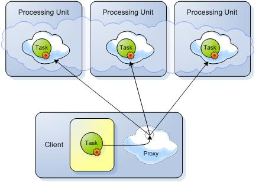
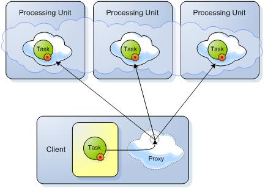

Phase 1 - Sending the Tasks to be executed:

Phase 2 - Getting the results back to be reduced:

Task execution in an asynchronous manner, co-located with the Space (Processing Unit that started an embedded Space). Tasks can be executed directly on a specific cluster member using routing declarations. Tasks can also be executed in "broadcast" mode on all the primary cluster members concurrently, and reduced to a single result on the client side. Tasks are dynamic in terms of content and class definition. (The Task does not have to be available within the Space classpath.)
This feature allows dynamic class loading the first time a task is executed. If your use case requires loading a class afterward, use static import or keep the type as a member. Changing the task in runtime is not supported.
The Task interface is defined as follows:
public interface Task<T extends Serializable> extends Serializable {
/**
* Computes a result, or throws an exception if unable to do so.
*
* @return computed result
* @throws Exception if unable to compute a result
*/
T execute() throws Exception;
}
The following is a simple implementation of a task that accepts a value that will be returned in the execute phase.
public class MyTask implements Task<Integer> {
private int value;
public MyTask(int value) {
this.value = value;
}
public Integer execute() throws Exception {
return value;
}
}
Executing the task uses the GigaSpace API with a routing value of 2 (the second parameter):
AsyncFuture<Integer> future = gigaSpace.execute(new MyTask(2), 2);
int result = future.get();
Task execution is asynchronous in nature, returning an AyncFuture. This allows the result to be retrieved at a later stage. AsyncFuture allows registration of an AsyncFutureListener that will execute the specified logic when the Task completes.
The following are the interfaces for both AsyncFuture and AsyncFutureListener:
public interface AsyncFuture<V> extends Future<V> {
void setListener(AsyncFutureListener<V> listener);
}
public interface AsyncFutureListener<T> {
/**
* A callback when a result of an async invocation arrives.
*/
void onResult(AsyncResult<T> result);
}
Passing the listener can be done by setting it on the AsyncFuture, or when executing a Task using the GigaSpace API as an additional parameter.
AsyncResult can be used to extract the result or the exception of the execution:
public interface AsyncResult<T> {
/**
* Returns the result of the async invocation. Returns <code>null</code>
* in case of an exception. {@link #getException()} should be checked for
* successful execution.
*/
T getResult();
/**
* In case of an async invocation failure, returns the exception causing it.
* If the invocation is successful, this method returns <code>null</code>.
*/
Exception getException();
}
If there are no connections available for an asynchronous operation it will be blocked until a connection becomes available, which can affect system performance. If your environment is sensitive to this, you can use the com.gs.transport_protocol.lrmi.throw-resource-not-available Boolean property to configure the system behavior.
If you set this property to true, a ResourceNotAvailableException is thrown instead of blocking until resources are available.
When executing a single Task, there are several ways its routing can be controlled. Passing the routing information as a parameter to the execute command is the simplest approach:
AsyncFuture<Integer> future = gigaSpace.execute(new MyTask(2), 2);
int result = future.get();
Alternatively, it is sufficient to define a POJO property annotated @SpaceRouting. The value of that property will be used to route any Tasks defined in this way. For example:
public void Order {
// ...
@SpaceRouting
public Integer getOrderRouting() {
// ...
}
}
Order order = new Order();
AsyncFuture<Integer> future = gigaSpace.execute(new MyTask(2), order);
int result = future.get();
Routing information can also be defined at the Task level, in two ways:
Provide an instance property and annotate the getter with the @SpaceRouting annotation.
Implement the TaskRoutingProvider interface (for non annotations based configuration).
public class MyTask implements Task<Integer> {
private int value;
public MyTask(int value) {
this.value = value;
}
public Integer execute() throws Exception {
return value;
}
@SpaceRouting
public Integer routing() {
return this.value;
}
}
public class MyTask implements Task<Integer> implements TaskRoutingProvider {
private int value;
public MyTask(int value) {
this.value = value;
}
public Integer execute() throws Exception {
return value;
}
public Integer getRouting() {
return this.value;
}
}
Using either mechanism to define routing at the the Task level removes the need for the routing parameter:
AsyncFuture<Integer> future = gigaSpace.execute(new MyTask(2));
int result = future.get();
A DistributedTask is a Task that is executed more than once (concurrently). It returns a result that is the reduced product of all operations. This reduction is calculated in the Task's reduce(...) method.
Phase 1 - Sending the Tasks to be executed:

Phase 2 - Getting the results back to be reduced:
Here is the DistributedTask API:
public interface AsyncResultsReducer<T, R> {
R reduce(List<AsyncResult<T>> results) throws Exception;
}
public interface DistributedTask<T extends Serializable, R> extends Task<T>, AsyncResultsReducer<T, R> {
}
The distributed task interface extends both Task and AsyncResultsReducer. The Task interface is used to execute a specific execution of the distributed task (there will be several executions of it), and the AsyncResultsReducer is used to reduce the results of all the executions.
Lets write a (very) simple example of a DistributedTask:
public class MyDistTask implements DistributedTask<Integer, Long> {
public Integer execute() throws Exception {
return 1;
}
public Long reduce(List<AsyncResult<Integer>> results) throws Exception {
long sum = 0;
for (AsyncResult<Integer> result : results) {
if (result.getException() != null) {
throw result.getException();
}
sum += result.getResult();
}
return sum;
}
}
MyDistTask returns 1 for each of its execute operations, and the reducer sums all of the executions. If an exception was thrown during the execute operation (in our case, it will never happen), the exception is thrown back to the user during the reduce operation.
A DistributedTask can be broadcast to all primary nodes of the cluster or routed selectively. Executing a distributed task on several nodes can be done as follows:
AsyncFuture<Long> future = gigaSpace.execute(new MyDistTask(), 1, 4, 6, 7);
long result = future.get(); // result will be 4
In this case, MyDistTask is executed concurrently and asynchronously on the nodes that correspond to routing values of 1, 4, 6, and 7.
Broadcasting the execution to all current primary nodes can be done by simply executing just the DistributedTask. Here is an example:
AsyncFuture<Long> future = gigaSpace.execute(new MyDistTask());
long result = future.get(); // result will be the number of primary spaces
In this case, the DistributedTask is executed on all primary Spaces of the cluster.
When executing a distributed task, results arrive in an asynchronous manner. When all the results have arrived, the AsyncResultsReducer is used to reduce them. The AsyncResultFitler can be used to as a callback and filter mechanism to be invoked for each result that arrives.
public interface AsyncResultFilter<T> {
/**
* Controls what should be done with the results.
*/
enum Decision {
/**
* Continue processing the distributed task.
*/
CONTINUE,
/**
* Break out of the processing of the distributed task and move
* to the reduce phase.
*/
BREAK,
/**
* Skip this result and continue processing the rest of the results.
*/
SKIP
}
/**
* A callback invoked for each result that arrives as a result of a distributed task execution allowing
* to access the result that caused this event, the events received so far, and the total expected results.
*/
Decision onResult(AsyncResultFilterEvent<T> event);
}
The filter can be used to control if:
A result should be used or not (the SKIP decision).
There are enough results to move to the reduce phase (the BREAK decision).
Results should continue to accumulate (the CONTINUE decision).
The filter can also be used to identify that results have arrived and we can do something within our application as a result. In this case, make sure that heavy processing is performed on a separate (probably pooled) thread.
The executor builder API allows combining several task executions (both distributed and non-distributed) into a seemingly single execution (with a reduce phase). Think of the ExecutorBuilder as a cartridge that accumulates all the tasks to be executed, and then executes all of them at once giving back a reduced result (in a concurrent and asynchronous manner). The following is an example of the API:
AsyncFuture<Integer> future = gigaSpace.executorBuilder(new SumReducer<Integer, Integer>(Integer.class))
.add(new MyTask(2))
.add(new MyOtherTask(), 3)
.add(new MyDistTask())
.execute();
Integer result = future.get();
In the above case, there are several tasks that are "added" to the ExecutorBuilder, executed (in a similar manner to a single distributed task) and then reduced using a sum reducer that is provided when building the ExecutorBuilder.
The ExecutorBuilder can also be passed an optional AsyncResultFilter if the reducer also implements it.
See the Elastic Distributed Risk Analysis Engine for a full ExecutorBuilder API example.
The most common scenario for using executors is by interacting with the co-located Space on which the task is executed. A GigaSpace instance, which works against a co-located Space, can be easily injected either using annotations or using an interface. Here is an example:
public class TemplateCountTask implements DistributedTask<Integer, Long> {
private Object template;
@TaskGigaSpace
private transient GigaSpace gigaSpace;
public TemplateCountTask(Object template) {
this.template = template;
}
public Integer execute() throws Exception {
return gigaSpace.count(template);
}
public Long reduce(List<AsyncResult<Integer>> results) throws Exception {
long sum = 0;
for (AsyncResult<Integer> result : results) {
if (result.getException() != null) {
throw result.getException();
}
sum += result.getResult();
}
return sum;
}
}
public class TemplateCountTask implements DistributedTask<Integer, Long>, TaskGigaSpaceAware {
private Object template;
private transient GigaSpace gigaSpace;
public TemplateCountTask(Object template) {
this.template = template;
}
public void setGigaSpace(GigaSpace gigaSpace) {
this.gigaSpace = gigaSpace;
}
public Integer execute() throws Exception {
return gigaSpace.count(template);
}
public Long reduce(List<AsyncResult<Integer>> results) throws Exception {
long sum = 0;
for (AsyncResult<Integer> result : results) {
if (result.getException() != null) {
throw result.getException();
}
sum += result.getResult();
}
return sum;
}
}
You can use the ApplicationContextAware interface to inject a clustered proxy into the task implementation. This is useful when the task should access other partitions. See the following example:
public class MyTask implements Task<Integer>, ApplicationContextAware {
@TaskGigaSpace
private transient GigaSpace colocatedSpace;
private transient GigaSpace clusteredSpace;
public MyTask() {
}
public void setApplicationContext(ApplicationContext applicationContext)
throws BeansException {
clusteredSpace= (GigaSpace) applicationContext.getBean("clusteredGigaSpace");
}
....
}
where the pu.xml should have:
<os-core:embedded-space id="space" space-name="mySpace"/>
<os-core:giga-space id="clusteredGigaSpace" space="space" clustered="true"/>
A task may have to make use of resources defined within the Processing Unit where it is executed (that are not the co-located Space). For example, access a bean defined within the co-located Processing Unit. A Task executed goes through the same lifecycle of a bean defined within a Processing Unit (except that it isn't registered with a Processing Unit). As such, injecting resources can be done using annotations (@Autowired and @Resource) or lifecycle interfaces (such as ApplicationContextAware).
In order to enable resource injection, the task must either be annotated with AutowireTask or implement the marker interface AutowireTaskMarker. The following is an example of injecting a resource of type OrderDao registered under the bean name orderDao. The OrderDao is then used to count the number of orders for each node.
@AutowireTask
public class OrderCountTask implements DistributedTask<Integer, Long> {
private Object template;
@Resource(name = "orderDao")
private transient OrderDao orderDao;
public Integer execute() throws Exception {
return orderDao.countOrders();
}
public Long reduce(List<AsyncResult<Integer>> results) throws Exception {
long sum = 0;
for (AsyncResult<Integer> result : results) {
if (result.getException() != null) {
throw result.getException();
}
sum += result.getResult();
}
return sum;
}
}
(Remember to add context:annotation-config to the Processing Unit.)
When enabling autowiring of tasks, OpenSpaces annotations/interface injections can also be used, such as the ClusterInfo injection.
You can inject a co-located GigaSpace instance to the task using the @TaskGigaSpace annotation implementing the TaskGigaSpaceAware interface. You can also wire the task through standard Spring dependency injection using the @AutowireTask and @Resource annotations.
However, there's a big difference between the two; the @TaskGigaSpace annotation and the TaskGigaSpaceAware interface are intentionally designed not to trigger the Spring dependency resolution and injection process, because it can be quite costly in terms of performance if executed every time a task is submitted. Therefore, for the common case where you only need to inject the collocated GigaSpace instance to the task, it is recommended to use @TaskGigaSpace or TaskGigaSpaceAware.
OpenSpaces comes with several built-in reducers and distributed tasks that can be used to perform common reduce operations (such as Min, Max, Avg and Sum). For example, if you use a simple Task:
public class MyTask implements Task<Integer> {
public Integer execute() throws Exception {
return 1;
}
}
We can easily make a distributed task out of it that sums all the results using the SumTask:
AsyncFuture<Integer> future = gigaSpace.execute(new SumTask<Integer, Integer>(Integer.class, new MyTask()));
int result = future.get(); // returns the number of active cluster members
In the above case, SumTask is a distributed task that wraps a simple Task. It automatically implements the reduce operation by summing all the results. This execution results in executing a distributed task against all the primaries.
SumTask uses the SumReducer internally, which just implements AsyncResultsReducer. The reducer by itself can be used with APIs that just use a reducer, for example, the ExecutorBuilder construction.
See the Aggregators section for more details.
When executing a task over the Space, the code is loaded from the remote client and cached for future executions. Since the code is cached, modifications are ignored, and users are forced to restart the Space whenever they modify the code.
Starting with @SupportCodeChange annotation to tell the Space your code has changed. The Space can store multiple versions of the same task. This is ideal for supporting clients using different versions of a task.
For example, start with annotating your task with @SupportCodeChange(id="1"). When the code changes, set the annotation to @SupportCodeChange(id="2"), and the Space will load the new task.
import org.openspaces.core.executor.Task;
import com.gigaspaces.annotation.SupportCodeChange;
@SupportCodeChange(id="1")
public class DynamicTask implements Task<Integer> {
@Override
public Integer execute() throws Exception {
return new Integer(1);
}
}
import org.openspaces.core.executor.Task;
import com.gigaspaces.annotation.SupportCodeChange;
@SupportCodeChange(id="2")
public class DynamicTask implements Task<Integer> {
@Override
public Integer execute() throws Exception {
return new Integer(2);
}
}
For more information, see the Change Code Without a Restart page.
Executors fully support transactions similar to other GigaSpace APIs. When an execute operation is executed within a declarative transaction, it will automatically join it. The transaction itself is then passed to the node the task executed on, and added to it declaratively. This means that any GigaSpace operation performed within the task execute operation automatically joins the transaction started on the client side.
An exception thrown within the execute operation will not cause the transaction to roll back (because it might be a valid exception). Transaction commit/rollback is controlled just by the client that executed the task.
When executing distributed tasks, or tasks that are executed on more than one node within the same execution, they should use the distributed transaction manager. Tasks that execute on a single node can use the distributed transaction manager, but should use the local transaction manager.
Support for OpenSpaces executors allows easily implementing the java.util.concurrent.ExecutorService, which supports the ExecutorService API and executed Callable and Runnable as tasks within the Space. The following is an example of how to get an ExecutorService implementation based on OpenSpaces executors and use it:
ExecutorService executorService = TaskExecutors.newExecutorService(gigaSpace);
Future<Integer> future = executorService.submit(new MyCallable());
int result = future.get();
The java.util.concurrent support also comes with built-in adapters from Callable/Runnable to Task/DistributedTask. The adapters are used internally to implement the ExecutorService, but can be used on their own. The adapters can be constructed using utility methods found within the TaskExecutors factory. See the following example:
// convert a simple callable to task
Task<Integer> task1 = TaskExecutors.task(new MyCallable());
// convert a simple callable to distributed task
DistributedTask<Integer> task2 = TaskExecutors.task(new MyCallable(),
new SumReducer<Integer, Integer>(Integer.class));
The following example demonstrates how to use the Task Execution API.
If the Task execute method is called frequently or large complex objects are used as return types, it is recommended to implement optimized serialization such as Externalizable for the returned value object or use libraries such as kryo.
For more information, see the Custom Serialization page.